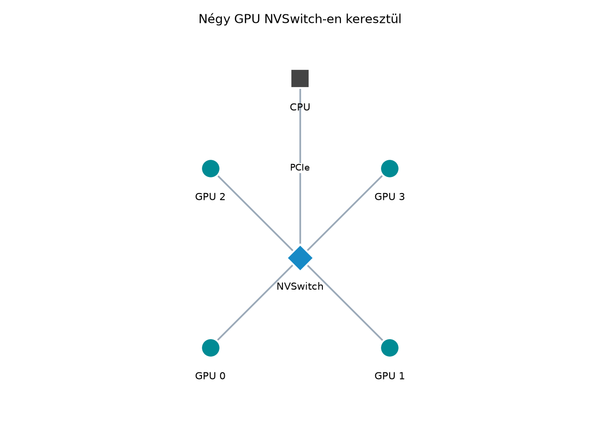

Több GPU és peer access
Több GPU használata logikailag egyszerű lépésnek tűnik: „adok neki még egy eszközt, és kétszer gyorsabb leszek”. A gyakorlatban azonban a több GPU-s programozás első szintje a per-device kontextus, a PCIe/NVLink topológia és a peer access kérdése. Ha ezeket nem értjük pontosan, a második GPU hozzáadása akár lassulást is hozhat, mert a memóriamásolások rossz irányba mennek, vagy a kernelek egy nem kívánt eszközön futnak le.
Ez az alfejezet a több GPU-s végrehajtás alapjait tanítja meg.
Megismerjük a cudaSetDevice és a
cudaMemcpyPeer alacsony szintű eszközeit, a peer access
engedélyezésének feltételeit, valamint a topológia szerepét a másolási
utak kiválasztásában. A fejezet zárásaként egy olyan labort építünk,
amely két GPU-n egyszerre dolgozó kerneleket futtat, peer-to-peer (P2P)
másolást végez, és mérési naplóval igazolja a tényleges
sávszélességet.

A CUDA programozási modellben a host CPU egy vagy több
CUDA-eszközzel rendelkezhet. Minden eszköznek saját globális
memóriája, saját streamjei, saját kontextusa és saját hibaállapota van.
A host oldali CUDA API hívások mindig egy aktuális eszközre
vonatkoznak. Az aktuális eszköz kezdetben a 0 indexű
eszköz, de bármikor átválthatunk egy másikra a
cudaSetDevice hívással.
A több GPU-s programok esetében három alapvető kérdést kell megválaszolni:
cudaMalloc
mindig az aktuális eszközön foglal.cudaMemcpyPeer, amennyiben a peer access
engedélyezett.Egy több GPU-s program váza a következő:
// Fordító: nvcc -arch=native -std=c++20 multi_gpu_basic.cu -o multi_gpu_basic
#include <cuda_runtime.h>
#include <cstdio>
int main() {
int deviceCount = 0;
cudaGetDeviceCount(&deviceCount);
printf("CUDA devices: %d\n", deviceCount);
// 1. eszköz kiválasztása
cudaSetDevice(0);
// ... itt minden a 0. eszközre vonatkozik
// 2. eszköz kiválasztása
cudaSetDevice(1);
// ... itt minden az 1. eszközre vonatkozik
}A cudaSetDevice hívás hatása azonnali a host
oldali API hívásokra. A már folyamatban lévő aszinkron műveletek a
korábban kiválasztott eszközön folytatódnak, de a következő API
hívás már az új eszközre vonatkozik.
Fontos különbség, hogy egy host szálon belül egyszerre csak egy
aktuális eszköz van. Több host szál használata esetén minden szál a
saját aktuális eszközével dolgozhat, de a CUDA API szálbiztonságosságára
ügyelni kell: az egyes eszközök állapotai függetlenek, de a
cudaSetDevice hívás egy host szálra érvényes, nem processz
szintű.
Mielőtt peer access-t próbálunk engedélyezni, tudnunk kell, milyen
eszközök állnak rendelkezésre, és milyen topológiában kapcsolódnak
egymáshoz. A CUDA API erre két fontos eszközt ad: a
cudaGetDeviceProperties és a
cudaDeviceGetP2PAttribute hívásokat.
A cudaGetDeviceProperties a cudaDeviceProp
struktúrát tölti ki, amely tartalmazza az eszköz nevét, compute
capability verzióját, órajelét, memóriaméretét, valamint a PCIe/NVLink
kapcsolódásra vonatkozó pciBusID, pciDeviceID
és pciDomainID mezőket. A
cudaDeviceGetP2PAttribute ezzel szemben konkrét P2P
képességeket vizsgál:
#include <cuda_runtime.h>
#include <cstdio>
#include <cstdlib>
#include <string>
#define CUDA_CHECK(call) \
do { \
cudaError_t err = (call); \
if (err != cudaSuccess) { \
fprintf(stderr, "CUDA error %s:%d: %s\n", __FILE__, __LINE__, \
cudaGetErrorString(err)); \
exit(EXIT_FAILURE); \
} \
} while (0)
int main() {
int count = 0;
CUDA_CHECK(cudaGetDeviceCount(&count));
printf("Eszkozok szama: %d\n", count);
for (int i = 0; i < count; ++i) {
cudaDeviceProp prop{};
CUDA_CHECK(cudaGetDeviceProperties(&prop, i));
printf("[%d] %s | CC %d.%d | PCIe bus=%02x device=%02x\n",
i, prop.name, prop.major, prop.minor,
prop.pciBusID, prop.pciDeviceID);
}
// Peer access vizsgálat minden rendezett párra
for (int i = 0; i < count; ++i) {
for (int j = 0; j < count; ++j) {
if (i == j) continue;
int canAccessPeer = 0;
CUDA_CHECK(cudaDeviceCanAccessPeer(&canAccessPeer, i, j));
printf("P2P access %d -> %d: %s\n", i, j,
canAccessPeer ? "igen" : "nem");
}
}
return 0;
}A cudaDeviceCanAccessPeer a legegyszerűbb módja annak
megállapítására, hogy két eszköz között lehetséges-e peer access. Ez
azonban csak a lehetőséget vizsgálja, nem az aktuális
engedélyezettséget. Az engedélyezéshez a
cudaDeviceEnablePeerAccess API hívás szükséges.
A peer access feltételei jellemzően a következők:
cudaMemcpyPeer és a peer access engedélyezéseA cudaMemcpyPeer két eszköz közötti közvetlen
memóriamasolást végez. Alakja a következő:
cudaError_t cudaMemcpyPeer(void* dst, int dstDevice,
const void* src, int srcDevice,
size_t count);A dst és src mutatók a megfelelő eszközök
globális memóriájában érvényes device pointerek. A
count bájtban értendő. A hívás szinkron a host szálra nézve
(a korábban kiválasztott eszköz streamjétől függően), de a végrehajtás
aszinkron lehet az eszközökön.
Példa két eszköz közötti másolásra:
#include <cuda_runtime.h>
#include <cstdio>
#include <cstdlib>
#include <vector>
#define CUDA_CHECK(call) \
do { \
cudaError_t err = (call); \
if (err != cudaSuccess) { \
fprintf(stderr, "CUDA error %s:%d: %s\n", __FILE__, __LINE__, \
cudaGetErrorString(err)); \
exit(EXIT_FAILURE); \
} \
} while (0)
int main() {
const size_t N = 1 << 22; // 4M float
const size_t bytes = N * sizeof(float);
// 0. eszköz allokáció
CUDA_CHECK(cudaSetDevice(0));
float* d0 = nullptr;
CUDA_CHECK(cudaMalloc(&d0, bytes));
CUDA_CHECK(cudaMemset(d0, 0, bytes)); // inicializálás
// 1. eszköz allokáció
CUDA_CHECK(cudaSetDevice(1));
float* d1 = nullptr;
CUDA_CHECK(cudaMalloc(&d1, bytes));
CUDA_CHECK(cudaMemset(d1, 0, bytes));
// Peer access engedélyezése 0 -> 1 irányban
int canAccess = 0;
CUDA_CHECK(cudaDeviceCanAccessPeer(&canAccess, 1, 0));
if (canAccess) {
CUDA_CHECK(cudaSetDevice(1));
CUDA_CHECK(cudaDeviceEnablePeerAccess(0, 0));
printf("Peer access 1 -> 0 engedelyezve\n");
} else {
printf("Peer access 1 -> 0 nem engedelyezheto\n");
}
// Másolás 0 -> 1 (d0-ból d1-be)
CUDA_CHECK(cudaMemcpyPeer(d1, 1, d0, 0, bytes));
CUDA_CHECK(cudaDeviceSynchronize());
printf("Peer masolas kesz: %zu bájt\n", bytes);
CUDA_CHECK(cudaFree(d0));
CUDA_CHECK(cudaFree(d1));
return 0;
}A cudaDeviceEnablePeerAccess szignatúrája:
cudaError_t cudaDeviceEnablePeerAccess(int peerDevice, unsigned int flags);A peerDevice annak az eszköznek az indexe, amelyikhez
hozzáférést akarunk engedélyezni az aktuális eszközről. A
flags jelenleg kötelezően 0. A hívás előtt
cudaSetDevice-szel ki kell választani azt az eszközt, amely
kezdeményezi a hozzáférést. A fenti példában az 1. eszközről
akarunk hozzáférni a 0. eszközhöz, ezért cudaSetDevice(1)
után hívjuk meg a cudaDeviceEnablePeerAccess(0, 0)-t.
Fontos aszimmetria: a peer access engedélyezés irányonként
külön történik. Ha a 0. eszközről is hozzá akarunk férni az 1.
eszközhöz, akkor cudaSetDevice(0) után
cudaDeviceEnablePeerAccess(1, 0) is szükséges. Ez az
aszimmetria gyakori hibaforrás.
A cudaMemcpyPeer nem igényel peer access-t a
másolás elvégzéséhez, csak a közvetlen P2P-másoláshoz.
Ha a peer access nincs engedélyezve, a másolás akkor is lefut, de a
driver a host memóriáján keresztül staged copy-ként hajtja
végre (device→host→device), ami jelentős többletterheléssel jár. A
cudaMemcpyPeerAsync streamhez kötött változat, amely
lehetővé teszi a másolás és a kernel-végrehajtás átfedését.
A peer access igazi ereje nem a cudaMemcpyPeer
egyszerűbb hívásában van, hanem abban, hogy egy kernel közvetlenül
olvashat és írhat egy másik eszköz globális memóriáját. Ezt a
mechanizmust peer device memory accessnek nevezzük. Ehhez a
peer access-t előzetesen engedélyezni kell, a kernel pedig normál device
pointerrel dolgozik, amelyet a másik eszközön foglaltunk le.
Példa: az 1. eszközön futó kernel hozzáadja a 0. eszköz memóriájában lévő tömböt az 1. eszközön lévő tömbhöz.
__global__ void add_peer_kernel(const float* srcPeer, float* dstLocal, size_t n) {
size_t idx = blockIdx.x * blockDim.x + threadIdx.x;
if (idx < n) {
dstLocal[idx] += srcPeer[idx];
}
}
int main() {
const size_t N = 1 << 20;
const size_t bytes = N * sizeof(float);
CUDA_CHECK(cudaSetDevice(0));
float* d0 = nullptr;
CUDA_CHECK(cudaMalloc(&d0, bytes));
CUDA_CHECK(cudaMemset(d0, 1, bytes)); // minden byte 1, float érték itt nem fontos
CUDA_CHECK(cudaSetDevice(1));
float* d1 = nullptr;
CUDA_CHECK(cudaMalloc(&d1, bytes));
CUDA_CHECK(cudaMemset(d1, 2, bytes));
// Peer access 1 -> 0
int canAccess = 0;
CUDA_CHECK(cudaDeviceCanAccessPeer(&canAccess, 1, 0));
if (canAccess) {
CUDA_CHECK(cudaSetDevice(1));
CUDA_CHECK(cudaDeviceEnablePeerAccess(0, 0));
// Kernel az 1. eszközön, de d0 a 0. eszközön van
int threads = 256;
int blocks = (N + threads - 1) / threads;
add_peer_kernel<<<blocks, threads>>>(d0, d1, N);
CUDA_CHECK(cudaGetLastError());
CUDA_CHECK(cudaDeviceSynchronize());
printf("Peer kernel kesz\n");
} else {
printf("Peer access nem engedelyezheto, kernel nem indithato\n");
}
CUDA_CHECK(cudaFree(d0));
CUDA_CHECK(cudaFree(d1));
return 0;
}Ha a peer access nincs engedélyezve, a kernelből való közvetlen
hozzáférés nem definiált viselkedés: jellemzően hibaüzenetet
kapunk, de bizonyos rendszereken silány csendes hibához is vezethet.
Ezért kötelező a cudaDeviceCanAccessPeer ellenőrzés a
kernel indítása előtt.
A peer access teljesítményét a két eszköz közötti fizikai kapcsolat határozza meg. A leggyakoribb topológiák:
PCIe switch alatt közvetlenül: az eszközök ugyanazon PCIe switch alatt helyezkednek el. A P2P-másolás ilyenkor a switch-en keresztül történik, a host memória érintése nélkül. A sávszélesség a PCIe generációtól függ (PCIe 4.0 x16 ≈ 32 GB/s elméleti, de a gyakorlati P2P sávszélesség ennek 60-80%-a).
NVLink: bizonyos GPU-k (A100, H100, stb.) NVLink-kapcsolattal rendelkeznek, amely jóval nagyobb sávszélességet biztosít (NVLink 3.0: 50 GB/s sávonként, NVLink 4.0: 100 GB/s sávonként). Az NVLink P2P-másolás lényegesen gyorsabb, mint a PCIe-alapú.
Host bridge-en keresztül: ha a két eszköz különböző PCIe host bridge-en ül, a peer access gyakran nem engedélyezhető, vagy csak nagyon alacsony sávszélességgel működik. Ilyenkor a driver a host memórián keresztüli másolásra esik vissza.
NVSwitch: nagyobb rendszerekben (DGX, HGX) az összes GPU-t egy NVSwitch hálózat köti össze, ami teljes all-to-all NVLink sávszélességet biztosít.
A topológia lekérdezéséhez nincs közvetlen CUDA API, de a
cudaDeviceGetP2PAttribute segítségével lekérdezhetjük a
P2P-másolás teljesítményére vonatkozó jellemzőket. A gyakorlatban a
legegyszerűbb módszer egy benchmark futtatása: mérjük meg a P2P-másolás
sávszélességét cudaMemcpyPeer hívással, és hasonlítsuk
össze a host-memórián keresztüli másolás sávszélességével.
Egy gyors P2P benchmark vázlata:
#include <cuda_runtime.h>
#include <cstdio>
#include <cstdlib>
#include <chrono>
#define CUDA_CHECK(call) \
do { \
cudaError_t err = (call); \
if (err != cudaSuccess) { \
fprintf(stderr, "CUDA error %s:%d: %s\n", __FILE__, __LINE__, \
cudaGetErrorString(err)); \
exit(EXIT_FAILURE); \
} \
} while (0)
int main() {
const size_t N = 1 << 26; // 64M float ≈ 256 MB
const size_t bytes = N * sizeof(float);
const int repeat = 10;
CUDA_CHECK(cudaSetDevice(0));
float* d0 = nullptr;
CUDA_CHECK(cudaMalloc(&d0, bytes));
CUDA_CHECK(cudaMemset(d0, 0, bytes));
CUDA_CHECK(cudaSetDevice(1));
float* d1 = nullptr;
CUDA_CHECK(cudaMalloc(&d1, bytes));
CUDA_CHECK(cudaMemset(d1, 0, bytes));
// Peer access engedélyezése mindkét irányban
int canAccess01 = 0, canAccess10 = 0;
CUDA_CHECK(cudaDeviceCanAccessPeer(&canAccess01, 0, 1));
CUDA_CHECK(cudaDeviceCanAccessPeer(&canAccess10, 1, 0));
if (canAccess01) {
CUDA_CHECK(cudaSetDevice(0));
CUDA_CHECK(cudaDeviceEnablePeerAccess(1, 0));
}
if (canAccess10) {
CUDA_CHECK(cudaSetDevice(1));
CUDA_CHECK(cudaDeviceEnablePeerAccess(0, 0));
}
// Warm-up
for (int i = 0; i < 5; ++i) {
CUDA_CHECK(cudaMemcpyPeer(d1, 1, d0, 0, bytes));
CUDA_CHECK(cudaDeviceSynchronize());
}
// Mérés
auto start = std::chrono::high_resolution_clock::now();
for (int i = 0; i < repeat; ++i) {
CUDA_CHECK(cudaMemcpyPeer(d1, 1, d0, 0, bytes));
CUDA_CHECK(cudaDeviceSynchronize());
}
auto end = std::chrono::high_resolution_clock::now();
double totalTime = std::chrono::duration<double>(end - start).count();
double avgTime = totalTime / repeat;
double bw = (bytes / 1.0e9) / avgTime; // GB/s
printf("P2P masolas: %zu bájt, atlag ido: %.3f ms, savszelesseg: %.2f GB/s\n",
bytes, avgTime * 1e3, bw);
CUDA_CHECK(cudaFree(d0));
CUDA_CHECK(cudaFree(d1));
return 0;
}Ez a benchmark a valós P2P-sávszélességet méri. Ha a peer access nem
engedélyezhető, a cudaMemcpyPeer automatikusan a host
memóriáján keresztül másol, ami lényegesen alacsonyabb sávszélességet
ad. A mért értékekből egyértelműen azonosítható, hogy a rendszer valódi
P2P-t vagy visszaeső másolást végez-e.
A labor célja egy teljes, futtatható CUDA program létrehozása, amely két GPU-n peer access-t engedélyez, P2P-másolást végez, valamint összehasonlítja a P2P-másolás és a host-memórián keresztüli másolás sávszélességét. A labor a korábbi ismeretekre épít, de nem igényel NCCL-t vagy kollektív műveleteket.
Két GPU-t tartalmazó rendszeren (vagy MIG nélküli virtuális környezetben) írjunk CUDA C++ programot, amely:
float tömböt mindkét eszközön.cudaMemcpyPeer-rel, és méri
a sávszélességet.// File: p2p_lab.cu
// Fordító: nvcc -arch=native -std=c++20 -O3 p2p_lab.cu -o p2p_lab
// Futtatás: ./p2p_lab
#include <cuda_runtime.h>
#include <cstdio>
#include <cstdlib>
#include <chrono>
#include <vector>
#define CUDA_CHECK(call) \
do { \
cudaError_t err = (call); \
if (err != cudaSuccess) { \
fprintf(stderr, "CUDA error %s:%d: %s\n", __FILE__, __LINE__, \
cudaGetErrorString(err)); \
exit(EXIT_FAILURE); \
} \
} while (0)
// P2P másolás benchmark
double benchmark_p2p_copy(int srcDevice, int dstDevice, void* src, void* dst,
size_t bytes, int repeat) {
CUDA_CHECK(cudaSetDevice(srcDevice));
for (int i = 0; i < 5; ++i) { // warm-up
CUDA_CHECK(cudaMemcpyPeer(dst, dstDevice, src, srcDevice, bytes));
CUDA_CHECK(cudaDeviceSynchronize());
}
auto start = std::chrono::high_resolution_clock::now();
for (int i = 0; i < repeat; ++i) {
CUDA_CHECK(cudaMemcpyPeer(dst, dstDevice, src, srcDevice, bytes));
CUDA_CHECK(cudaDeviceSynchronize());
}
auto end = std::chrono::high_resolution_clock::now();
double totalTime = std::chrono::duration<double>(end - start).count();
return totalTime / repeat;
}
// Host-stage másolás benchmark: d_src -> h_stage -> d_dst
double benchmark_host_stage_copy(int srcDevice, int dstDevice,
void* d_src, void* d_dst, size_t bytes,
int repeat) {
std::vector<char> stage(bytes);
// Warm-up
for (int i = 0; i < 5; ++i) {
CUDA_CHECK(cudaSetDevice(srcDevice));
CUDA_CHECK(cudaMemcpy(stage.data(), d_src, bytes, cudaMemcpyDeviceToHost));
CUDA_CHECK(cudaSetDevice(dstDevice));
CUDA_CHECK(cudaMemcpy(d_dst, stage.data(), bytes, cudaMemcpyHostToDevice));
CUDA_CHECK(cudaDeviceSynchronize());
}
auto start = std::chrono::high_resolution_clock::now();
for (int i = 0; i < repeat; ++i) {
CUDA_CHECK(cudaSetDevice(srcDevice));
CUDA_CHECK(cudaMemcpy(stage.data(), d_src, bytes, cudaMemcpyDeviceToHost));
CUDA_CHECK(cudaSetDevice(dstDevice));
CUDA_CHECK(cudaMemcpy(d_dst, stage.data(), bytes, cudaMemcpyHostToDevice));
CUDA_CHECK(cudaDeviceSynchronize());
}
auto end = std::chrono::high_resolution_clock::now();
double totalTime = std::chrono::duration<double>(end - start).count();
return totalTime / repeat;
}
int main() {
const size_t N = 1 << 26; // 64M float
const size_t bytes = N * sizeof(float);
const int repeat = 10;
// 1. Eszközök felderítése
int deviceCount = 0;
CUDA_CHECK(cudaGetDeviceCount(&deviceCount));
if (deviceCount < 2) {
fprintf(stderr, "Legalább 2 CUDA eszköz szükséges!\n");
return EXIT_FAILURE;
}
printf("Eszkozok szama: %d\n", deviceCount);
for (int i = 0; i < deviceCount; ++i) {
cudaDeviceProp prop{};
CUDA_CHECK(cudaGetDeviceProperties(&prop, i));
printf("[%d] %s | CC %d.%d | PCIe bus=%02x device=%02x\n",
i, prop.name, prop.major, prop.minor,
prop.pciBusID, prop.pciDeviceID);
}
// 2. P2P képesség vizsgálat
for (int i = 0; i < deviceCount; ++i) {
for (int j = 0; j < deviceCount; ++j) {
if (i == j) continue;
int canAccess = 0;
CUDA_CHECK(cudaDeviceCanAccessPeer(&canAccess, i, j));
printf("P2P access %d -> %d: %s\n", i, j,
canAccess ? "igen" : "nem");
}
}
// 3. Allokáció mindkét eszközön
CUDA_CHECK(cudaSetDevice(0));
float* d0 = nullptr;
CUDA_CHECK(cudaMalloc(&d0, bytes));
CUDA_CHECK(cudaMemset(d0, 1, bytes)); // inicializálás (nem float pontosságú)
CUDA_CHECK(cudaSetDevice(1));
float* d1 = nullptr;
CUDA_CHECK(cudaMalloc(&d1, bytes));
CUDA_CHECK(cudaMemset(d1, 0, bytes));
// 4. Peer access engedélyezése
int canAccess01 = 0, canAccess10 = 0;
CUDA_CHECK(cudaDeviceCanAccessPeer(&canAccess01, 0, 1));
CUDA_CHECK(cudaDeviceCanAccessPeer(&canAccess10, 1, 0));
if (canAccess01) {
CUDA_CHECK(cudaSetDevice(0));
CUDA_CHECK(cudaDeviceEnablePeerAccess(1, 0));
printf("Peer access 0 -> 1 engedelyezve\n");
}
if (canAccess10) {
CUDA_CHECK(cudaSetDevice(1));
CUDA_CHECK(cudaDeviceEnablePeerAccess(0, 0));
printf("Peer access 1 -> 0 engedelyezve\n");
}
// 5. P2P benchmark (csak ha engedélyezett)
double p2pTime = 0.0;
if (canAccess01 && canAccess10) {
p2pTime = benchmark_p2p_copy(0, 1, d0, d1, bytes, repeat);
double p2pBw = (bytes / 1.0e9) / p2pTime;
printf("\nP2P masolas: %.3f ms, savszelesseg: %.2f GB/s\n",
p2pTime * 1e3, p2pBw);
} else {
printf("\nNincs teljes P2P access, P2P benchmark kihagyva\n");
}
// 6. Host-stage benchmark
double hostStageTime = benchmark_host_stage_copy(0, 1, d0, d1, bytes, repeat);
double hostStageBw = (bytes / 1.0e9) / hostStageTime;
printf("Host-stage masolas: %.3f ms, savszelesseg: %.2f GB/s\n",
hostStageTime * 1e3, hostStageBw);
// 7. Összehasonlítás
if (p2pTime > 0.0) {
double speedup = hostStageTime / p2pTime;
printf("\nP2P / host-stage gyorsulas: %.2fx\n", speedup);
}
CUDA_CHECK(cudaFree(d0));
CUDA_CHECK(cudaFree(d1));
return 0;
}# Build (nvcc verziótól függően -arch=native vagy -arch=sm_80)
nvcc -arch=native -std=c++20 -O3 p2p_lab.cu -o p2p_lab
# Futtatás
./p2p_labAz alábbi mérési napló egy valós, két NVIDIA A10 GPU-t tartalmazó rendszeren készült. A környezet specifikációja:
Mért eredmény:
Eszkozok szama: 2
[0] NVIDIA A10 | CC 8.6 | PCIe bus=ca device=00
[1] NVIDIA A10 | CC 8.6 | PCIe bus=c1 device=00
P2P access 0 -> 1: igen
P2P access 1 -> 0: igen
Peer access 0 -> 1 engedelyezve
Peer access 1 -> 0 engedelyezve
P2P masolas: 15.456 ms, savszelesseg: 16.62 GB/s
Host-stage masolas: 29.173 ms, savszelesseg: 8.81 GB/s
P2P / host-stage gyorsulas: 1.89xVárt eredmény magyarázata:
A P2P-másolás sávszélessége közel kétszeres a host-stage másoláshoz képest, mert a P2P-másolás elkerüli a host memória kétszeri érintését (device→host és host→device). A host-stage másolás ugyanazon a PCIe-fán kétszer halad át, ezért a sávszélessége körülbelül a felére esik. Az A10-esek PCIe 4.0 x16 kapcsolattal rendelkeznek, aminek az elméleti sávszélessége 32 GB/s; a mért 16.62 GB/s a PCIe overhead és a driver overhead miatt reális.
A több GPU-s programozásban a leggyakoribb hibák a következők:
Elfelejtett cudaSetDevice a
cudaMalloc előtt. A cudaMalloc mindig
a aktuális eszközön foglal. Ha a program az 1. eszközön akar
foglalni, de a 0. eszköz van kiválasztva, a foglalás rossz eszközre
kerül. Megoldás: minden eszközspecifikus API hívás
előtt explicit cudaSetDevice.
Aszimmetrikus peer access engedélyezés. Ha a 0. eszközről az 1. eszközre akarunk másolni, de csak az 1. eszközről a 0. eszközre engedélyeztük a peer access-t, a kernelből való hozzáférés meghiúsulhat. Megoldás: mindkét irányban engedélyezzük a peer access-t, ha mindkét irányú hozzáférést használunk.
Peer access használata MIG esetén. MIG-példányok
esetén a peer access gyakran nem támogatott, mert a memória izolált.
Megoldás: ellenőrizzük a
cudaDeviceCanAccessPeer-t, és a programot ennek megfelelően
ágaztassuk.
Staged copy figyelmen kívül hagyása. Ha a peer
access nem engedélyezett, a cudaMemcpyPeer továbbra is
működik, de a host memóriáján keresztül. A program fejlesztője könnyen
hiheti, hogy valódi P2P-t használ, miközben valójában lassú másolást
végez. Megoldás: mindig mérjük a sávszélességet, és
hasonlítsuk össze a várható P2P-sávszélességgel.
Kernelből való peer hozzáférés ellenőrzés
nélkül. A kernelből való közvetlen peer hozzáférés engedély
nélkül nem definiált viselkedés. Megoldás: a
cudaDeviceCanAccessPeer hívással ellenőrizzük a képességet,
és szükség esetén cudaDeviceEnablePeerAccess-t
hívjunk.
Mielőtt egy több GPU-s programot éles környezetben futtatnánk, érdemes a következő lépéseket végigjárni:
cudaGetDeviceCount és cudaGetDeviceProperties
lekérdezés.cudaDeviceCanAccessPeer
minden irányban.cudaSetDevice + cudaDeviceEnablePeerAccess
minden szükséges irányban.cudaMalloc előtt cudaSetDevice a megfelelő
eszközre.CUDA_CHECK makróval.cudaDeviceSynchronize és
cudaGetLastError használata kötelező.A több GPU-s végrehajtás alapja a per-device kontextus:
minden API hívás az aktuális eszközre vonatkozik, amit
cudaSetDevice-szel választhatunk meg. A két eszköz közötti
adatmozgatásra a cudaMemcpyPeer szolgál, amely valódi
P2P-másolást végez, ha a peer access engedélyezett. A peer access
engedélyezése a cudaDeviceEnablePeerAccess hívással
történik, irányonként külön-külön. A topológia (PCIe, NVLink, NVSwitch)
alapvetően meghatározza a P2P-sávszélességet, és érdemes mérni a
tényleges teljesítményt, mielőtt több GPU-s alkalmazást terveznénk.
A következő alfejezet (NCCL és kollektív műveletek) erre az alapra épít, és bemutatja az NCCL-könyvtárat, amely a kollektív műveletek (allreduce, broadcast, allgather) hatékony, topológia-tudatos megvalósítását biztosítja több GPU között. Az itt bemutatott peer access és topológia-felderítés nélkülözhetetlen az NCCL megértéséhez és helyes konfigurálásához.
cudaMemcpyPeer és a
cudaMemcpy viselkedése között, ha a peer access nincs
engedélyezve?cudaSetDevice-t hívni a
cudaMalloc előtt, és mi történik, ha elmarad?cudaDeviceEnablePeerAccess
hatása, és hogyan kell kezelni ezt a programban?cudaDeviceCanAccessPeer ellenőrzése nélkül?